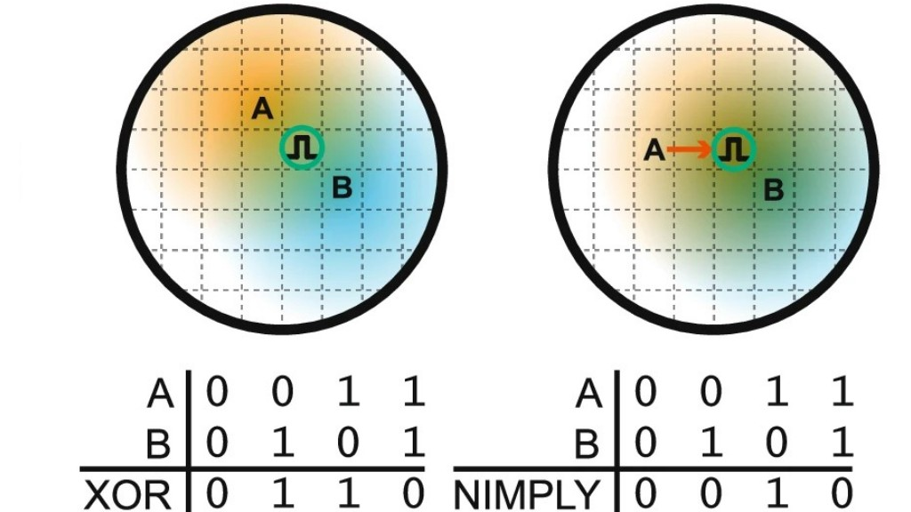

Microbial communities
By splitting the workload, several microbes in a community
can do much more than one strain alone. To explore what makes
microbial ecosystems efficient and resilient in nature
and in the lab, we engineer, observe and control different kinds of interactions
between community members.
This helps create reliable
biotechnologies for applications like sustainable manufacturing
and living therapeutics.

Self-organisation
Reacting to the environment in appropriate and specific ways
requires living systems to self-organise in space and time.
We engineer microbes with different
self-organisation mechanisms, investigating how complex behaviours can emerge
from simple logic on the single-cell level — and how this can be leveraged
for next-generation biocomputation and biosensing.

Research automation
Our labs accelerates discovery by developing new
computational design algorithms and automated experimental platforms,
which enables higher-throughput and more informative
engineering biology experiments.

Quantitative methods
To ensure that our data are reproducible and interoperable between
experimental platforms and different labs,
we establish robust quantitative methods and
standardised microbial engineering toolkits.